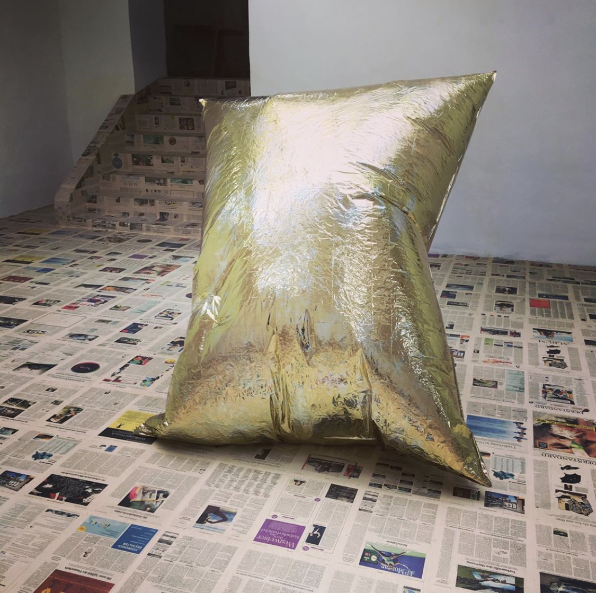
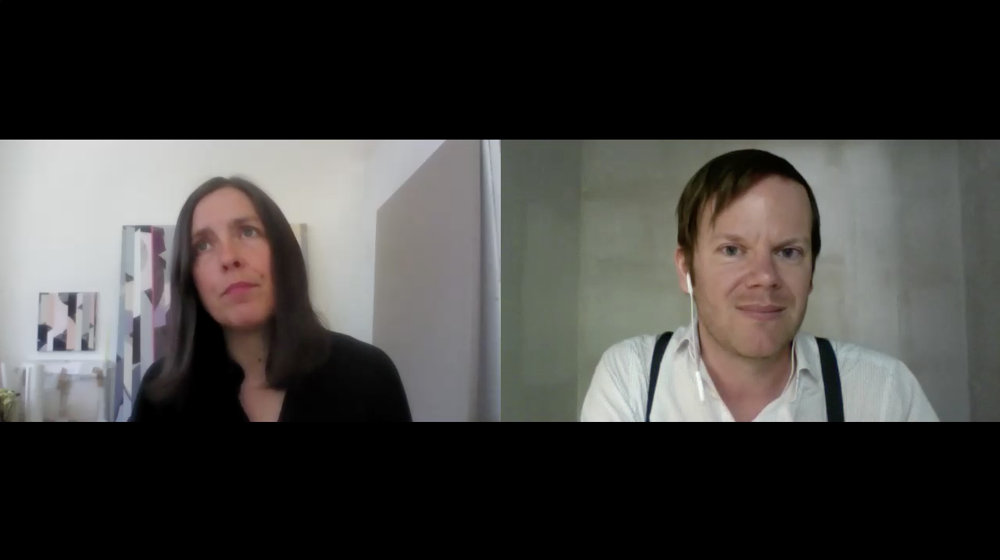
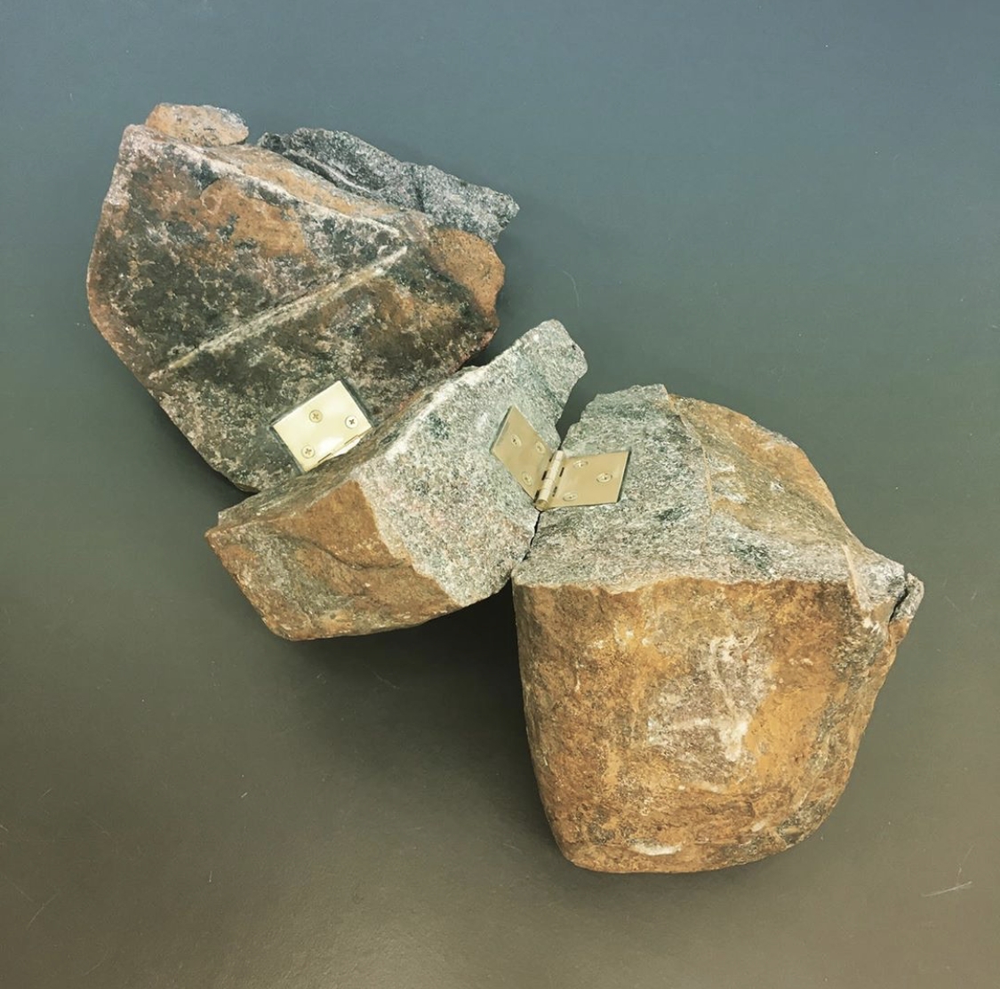
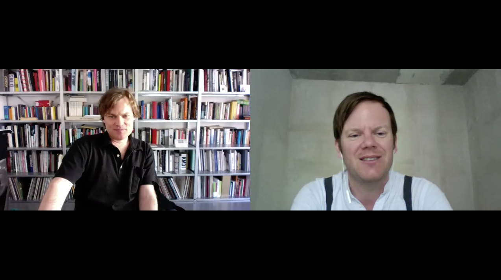

Florian Christopher
Florian is a consultant for contemporyry art.
He believes in meaningful connections between artists and collectors.
And he tries to ficilitate those whenver possible.
This page is Florians worklog
He posts updates here about art related stuff regularly
Florian may be reached directly via
emailNewsfeed
2020/04/10: Artist spotight:
Claire Fontaine
Newsfloor

2020/04/10: Artist interview:
Clare Goodwin
This is an ongoing interview series subject to the Covid19 situation.
Florian talks to artists from all around the world via video call in order to get their view on it and how they deal with it from a professional and personal point of view.

Clare talks about her latest initiative
StudioK3which aims to help artists which are currently in a tight spot due to the epdiemic by offering a web space for artwork sales and exhibitions.
She also explains why a surprising number of artists currently return to watercolor works.
Clare Goodwin is a British born Artist living in Zurich.
2020/04/10: Artist spotight:
Edith Collaths
Flindline #2

2020/04/14: Artist interview:
Andreas Golinski
This is an ongoing interview series subject to the Covid19 situation.
Florian talks to artists from all around the world via video call in order to get their view on it and how they deal with it from a professional and personal point of view.

Clare talks about her latest initiative
StudioK3which aims to help artists which are currently in a tight spot due to the epdiemic by offering a web space for artwork sales and exhibitions.
She also explains why a surprising number of artists currently return to watercolor works.
Clare Goodwin is a British born Artist living in Zurich.